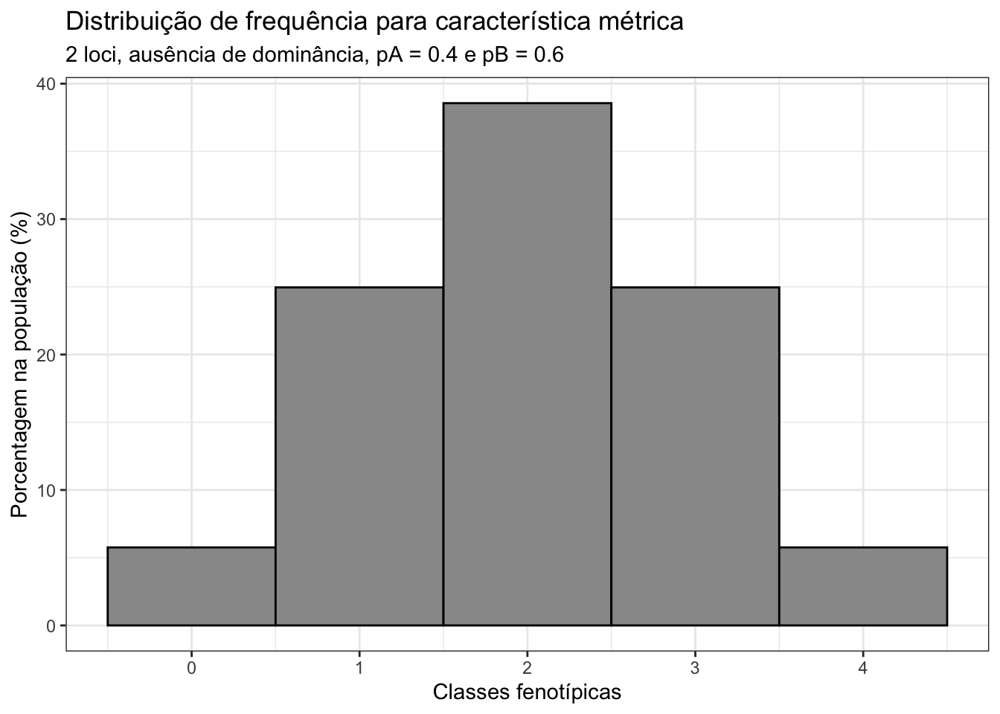

Provas
Nessa página, encontram-se as soluções para as provas da disciplina “Genética Quantativa” (UENF), ministrada pelo professor Messias Pereira Gonzaga.
Prova 1
Q1
(21%) Considerando uma planta de mamão duplo heterozigota (AaBb), sendo:
Loco A – determina o sexo da planta (AA = letal; Aa = hermafrodita e aa = feminina)
Loco B – determina a cor de polpa do fruto: (BB e Bb = polpa amarela; bb = polpa vermelha).
Considere que os locos são independentes. Considerando-se o plantio de uma progênie resultante da autofecundação desta planta, responda:
a) Qual a proporção de plantas hermafroditas e de polpa vermelha?
Da autofecundação de AaBb, temos:
Loco A: 2/3 hermafroditas : 1/3 femininas (n = 3, pois AA é letal)
Loco B: 3/4 polpa amarela : 1/4 polpa vermelha
Portanto:
\[ \begin{aligned} P(\text{hermafrodita e polpa vermelha}) &= \frac{2}{3} \times \frac{1}{4} \\ &= \frac{1}{6} = 0.1666667 = 16.66667\% \end{aligned} \]
b) Considerando-se 5 plantas ao acaso, qual a probabilidade de todas as plantas serem hermafroditas e de polpa amarela?
\[ \begin{aligned} P(\text{5 hermafroditas e polpa amarela}) &= (\frac{2}{3} \times \frac{3}{4})^5 \\ &= (\frac{1}{2})^5 \\ &= \frac{1}{32} = 0.03125 = 3.125\% \end{aligned} \]
c) Quantas mudas devem ser plantadas para ter 95% de segurança de que pelo menos uma planta seja do tipo mais aceito comercialmente (hermafrodita e de polpa vermelha)?
Probabilidade de obter o tipo mais aceito comercialmente: \(\frac{1}{6}\)
Pelo menos uma do tipo mais aceito comercialmente: \(1 - (\frac{5}{6})^n\)
Para 95% de segurança, temos:
\[ \begin{aligned} 1 - (\frac{5}{6})^n &= 0.95 \\ 0.05 &= (\frac{5}{6})^n \\ \log 0.05 &= n \log \frac{5}{6} \\ \\ n &= \frac{\log 0.05}{\log \frac{5}{6}} \\ &= 16.43 = \text{17 plantas} \end{aligned} \]
Q2
(15%) Mostre graficamente a aproximação ao equilíbrio sob acasalamento ao acaso para o caso de um gene ligado ao sexo. Considere as seguintes frequências iniciais: qf = 0,2 e qm = 0,8. Qual a freqüência gênica (q) no equilíbrio?
Implementando uma função para calcular frequências de genes ligados ao sexo em machos e fêmeas:
options(scipen = 99999)
calc_freq_xlinked <- function(pm0 = NULL, pf0 = NULL,
generations = 10) {
df <- data.frame(
Generation = seq_len(generations),
pf = c(pf0, rep(NA, generations - 1)),
pm = c(pm0, rep(NA, generations - 1))
)
for(t in 2:generations) {
df[t, "pf"] <- (df[t-1, "pm"] + df[t-1, "pf"]) / 2
df[t, "pm"] <- df[t-1, "pf"]
}
df$difference <- df$pf - df$pm
return(df)
}Aplicando função com dados do enunciado e demonstrando graficamente, simulando 20 gerações:
suppressPackageStartupMessages(library(tidyverse))
# Simulando 20 gerações
freq20 <- calc_freq_xlinked(pm0 = 0.8, pf0 = 0.2, generations = 20)
# Visualizando simulação
freq20[, 1:3] %>%
tidyr::pivot_longer(
!Generation, names_to = "sex", values_to = "freq"
) %>%
mutate(sex = str_replace_all(sex, c("pf" = "Fêmea",
"pm" = "Macho"))) %>%
ggplot(., aes(x = Generation, y = freq)) +
geom_point(aes(color = sex)) +
geom_line(aes(group=sex, color=sex)) +
scale_color_manual(values = c("grey40", "goldenrod")) +
theme_bw() +
ylim(0,1) +
labs(
color = "Sexo",
title = "Frequência do gene A ao longo de 20 gerações",
subtitle = "O gene A é ligado ao sexo",
x = "Geração", y = "Frequência"
)
Verificando a frequência de q no equilíbrio:
freq20## Generation pf pm difference
## 1 1 0.2000000 0.8000000 -0.600000000000
## 2 2 0.5000000 0.2000000 0.300000000000
## 3 3 0.3500000 0.5000000 -0.150000000000
## 4 4 0.4250000 0.3500000 0.075000000000
## 5 5 0.3875000 0.4250000 -0.037500000000
## 6 6 0.4062500 0.3875000 0.018750000000
## 7 7 0.3968750 0.4062500 -0.009375000000
## 8 8 0.4015625 0.3968750 0.004687500000
## 9 9 0.3992187 0.4015625 -0.002343750000
## 10 10 0.4003906 0.3992187 0.001171875000
## 11 11 0.3998047 0.4003906 -0.000585937500
## 12 12 0.4000977 0.3998047 0.000292968750
## 13 13 0.3999512 0.4000977 -0.000146484375
## 14 14 0.4000244 0.3999512 0.000073242188
## 15 15 0.3999878 0.4000244 -0.000036621094
## 16 16 0.4000061 0.3999878 0.000018310547
## 17 17 0.3999969 0.4000061 -0.000009155273
## 18 18 0.4000015 0.3999969 0.000004577637
## 19 19 0.3999992 0.4000015 -0.000002288818
## 20 20 0.4000004 0.3999992 0.000001144409A frequência de q no equilíbrio é de aproximadamente 0.40 ou 40%.
Q3
(26%) Na geração parental “0,” uma determinada população é formada por 100% do genótipo duplo heterozigoto “AaBb.” Considerando acasalamento ao acaso em gerações sucessivas, pergunta-se:
a) Quais as frequências gaméticas iniciais e no equilíbrio se os locos estiverem (1) não ligados, (2) ligados (fase aproximação) com uma frequência de recombinação de 40%?
100% AaBb, logo:
pA = qA = 0.5
pB = qB = 0.5
| Gametas | AB | Ab | aB | ab |
|---|---|---|---|---|
| Freq. EHW | 0.25 | 0.25 | 0.25 | 0.25 |
| Freq. obs. inicial | r = 0.5 | s = 0 | t = 0 | u = 0.5 |
| Desequilíbrio | 0.25 | -0.25 | -0.25 | 0.25 |
Sabendo que \(D_0 = 0.25\), podemos calcular \(D_t\), sendo t a geração usando a seguinte fórmula:
\(D_t = D_0(1-c)^t\)
A partir do desequilíbrio na geração t, \(D_t\), podemos calcular a frequência de qualquer gameta usando:
\[ \begin{aligned} r &= \hat{r} + D_t \\ s &= \hat{s} - D_t \\ t &= \hat{t} - D_t \\ u &= \hat{u} + D_t \end{aligned} \]
Implementando função para calcular o desequilíbrio e a frequência gamética em t gerações:
calc_D_freq <- function(D0 = 0.25, feq = c(0.25, 0.25, 0.25, 0.25),
c = 0.5, t = c(1:5)) {
dt <- D0 * (1-c)^t
rt <- feq[1] + dt
st <- feq[2] - dt
tt <- feq[3] - dt
ut <- feq[4] + dt
df_result <- data.frame(D=NA, r=NA, s=NA, t=NA, u=NA, Generation=NA)
for(i in seq_along(t)) {
df_result[i, "r"] <- rt[i]
df_result[i, "s"] <- st[i]
df_result[i, "t"] <- tt[i]
df_result[i, "u"] <- ut[i]
}
df_result$D <- dt
df_result$Generation <- t
return(df_result)
}Agora, podemos simular 20 gerações de cruzamento ao acaso e verificar as frequências gaméticas no equilíbrio para c = 0.5 e c = 0.4.
# Frequencias para c = 0.5 (locos independentes)
independentes <- calc_D_freq(c = 0.5, t=1:20)
independentes## D r s t u Generation
## 1 0.1250000000000 0.3750000 0.1250000 0.1250000 0.3750000 1
## 2 0.0625000000000 0.3125000 0.1875000 0.1875000 0.3125000 2
## 3 0.0312500000000 0.2812500 0.2187500 0.2187500 0.2812500 3
## 4 0.0156250000000 0.2656250 0.2343750 0.2343750 0.2656250 4
## 5 0.0078125000000 0.2578125 0.2421875 0.2421875 0.2578125 5
## 6 0.0039062500000 0.2539062 0.2460938 0.2460938 0.2539062 6
## 7 0.0019531250000 0.2519531 0.2480469 0.2480469 0.2519531 7
## 8 0.0009765625000 0.2509766 0.2490234 0.2490234 0.2509766 8
## 9 0.0004882812500 0.2504883 0.2495117 0.2495117 0.2504883 9
## 10 0.0002441406250 0.2502441 0.2497559 0.2497559 0.2502441 10
## 11 0.0001220703125 0.2501221 0.2498779 0.2498779 0.2501221 11
## 12 0.0000610351562 0.2500610 0.2499390 0.2499390 0.2500610 12
## 13 0.0000305175781 0.2500305 0.2499695 0.2499695 0.2500305 13
## 14 0.0000152587891 0.2500153 0.2499847 0.2499847 0.2500153 14
## 15 0.0000076293945 0.2500076 0.2499924 0.2499924 0.2500076 15
## 16 0.0000038146973 0.2500038 0.2499962 0.2499962 0.2500038 16
## 17 0.0000019073486 0.2500019 0.2499981 0.2499981 0.2500019 17
## 18 0.0000009536743 0.2500010 0.2499990 0.2499990 0.2500010 18
## 19 0.0000004768372 0.2500005 0.2499995 0.2499995 0.2500005 19
## 20 0.0000002384186 0.2500002 0.2499998 0.2499998 0.2500002 20# Frequencias para c = 0.4 (locos ligados com taxa de recombinação de 40%)
ligados <- calc_D_freq(c = 0.4, t=1:20)
ligados## D r s t u Generation
## 1 0.150000000000 0.4000000 0.1000000 0.1000000 0.4000000 1
## 2 0.090000000000 0.3400000 0.1600000 0.1600000 0.3400000 2
## 3 0.054000000000 0.3040000 0.1960000 0.1960000 0.3040000 3
## 4 0.032400000000 0.2824000 0.2176000 0.2176000 0.2824000 4
## 5 0.019440000000 0.2694400 0.2305600 0.2305600 0.2694400 5
## 6 0.011664000000 0.2616640 0.2383360 0.2383360 0.2616640 6
## 7 0.006998400000 0.2569984 0.2430016 0.2430016 0.2569984 7
## 8 0.004199040000 0.2541990 0.2458010 0.2458010 0.2541990 8
## 9 0.002519424000 0.2525194 0.2474806 0.2474806 0.2525194 9
## 10 0.001511654400 0.2515117 0.2484883 0.2484883 0.2515117 10
## 11 0.000906992640 0.2509070 0.2490930 0.2490930 0.2509070 11
## 12 0.000544195584 0.2505442 0.2494558 0.2494558 0.2505442 12
## 13 0.000326517350 0.2503265 0.2496735 0.2496735 0.2503265 13
## 14 0.000195910410 0.2501959 0.2498041 0.2498041 0.2501959 14
## 15 0.000117546246 0.2501175 0.2498825 0.2498825 0.2501175 15
## 16 0.000070527748 0.2500705 0.2499295 0.2499295 0.2500705 16
## 17 0.000042316649 0.2500423 0.2499577 0.2499577 0.2500423 17
## 18 0.000025389989 0.2500254 0.2499746 0.2499746 0.2500254 18
## 19 0.000015233994 0.2500152 0.2499848 0.2499848 0.2500152 19
## 20 0.000009140396 0.2500091 0.2499909 0.2499909 0.2500091 20b) Qual a freq. do genótipo “AaBb” quando a população estiver atingida o equilíbrio, se os locos estiverem (1) não ligados, (2) ligados (fase aproximação) com uma frequência de recombinação de 40%?
O genótipo AaBb pode ser gerado por:
- AB e ab (ru)
- Ab e aB (st)
- aB e Ab (ts)
- ab e AB (ur)
Usando as frequências obtidas na letra A), temos:
i <- independentes
# Para c = 0.5
(i$r[20] * i$u[20]) +
(i$s[20] * i$t[20]) +
(i$t[20] * i$s[20]) +
(i$u[20] * i$r[20])## [1] 0.25l <- ligados
# Para c = 0.4
(l$r[20] * l$u[20]) +
(l$s[20] * l$t[20]) +
(l$t[20] * l$s[20]) +
(l$u[20] * l$r[20])## [1] 0.25Q4
(20%) Considerando um indivíduo hexaploide com o seguinte genótipo: AAAaaa, sendo o referido loco localizado distante do centrômero, sendo o mesmo, dominante para porte: aaaaaa = porte baixo e demais genótipos de porte alto. Da autofecundação da referida planta, pergunta-se:
a) Quais os tipos de gametas a serem produzidos e as respectivas proporções?
Segregação cromatídica: AAAAAAaaaaaa
Gametas:
- AAA
- AAa
- Aaa
- aaa
Calculando frequências:
# Frequência de AAA
AAA <- choose(6, 3) / choose(12, 3)
AAA## [1] 0.09090909# Frequência de AAa
AAa <- ( choose(6, 2) * choose(6, 1) ) / choose(12, 3)
AAa## [1] 0.4090909# Frequência de Aaa
Aaa <- ( choose(6, 1) * choose(6,2) ) / choose(12, 3)
Aaa## [1] 0.4090909# Frequência de aaa
aaa <- choose(6, 3) / choose(12, 3)
aaa## [1] 0.09090909# Conferindo se as frequências somam a 1
AAA + AAa + Aaa + aaa## [1] 1b) Quais as frequências fenotípicas?
Como indivíduos de porte baixo são representados pelo genótipo aaaaaa, a sua frequência será \(aaa^2 = 0.008264463\) ou 0.8264463%. Sendo assim, temos as seguintes frequências fenotípicas:
0.8264463% porte baixo : 99.17355% porte alto
Q5
(18%) Falso ou verdadeiro. (Se falso, marque a parte que invalida)
a) ( F ) Caracteres quantitativos diferem dos qualitativos basicamente por serem determinados por vários genes e serem pouco influenciados pelo ambiente.
Caracteres quantitativos são muito influenciados pelo ambiente.
b) ( V ) A segregação cromossômica é considerada quando o loco em questão se situa muito próximo ao centrômero.
c) ( V ) Em uma população em EHW, quando p = q, as freqüências genotípicas em geral atingem o máximo.
d) ( F ) No caso de gene ligado ao sexo, a cada geração de cruzamento ao acaso, a diferença de freqüência gênica entre pai e mãe é reduzida à metade, porém, a frequência na mãe é sempre maior por se tratar do sexo homogamético (XX).
A frequência não é sempre maior na mãe. Se a frequência é maior na mãe na geração n, na geração n+1 a frequência será maior no pai, na n+2 será maior na mãe, e assim sucessivamente (ver gráfico da questão 2).
e) ( V ) Em uma população em EHW, para um alelo raro recessivo, a grande maioria dos genótipos recessivos são oriundos de indivíduos normais.
f) ( V ) Quanto maior o número de locos, mais rapidamente se observa a aproximação ao equilíbrio quando em cruzamento ao acaso.
Prova 2
Q1
(20%) Falso ou verdadeiro. Se falso, marque a(s) palavra(s) que justifique(m) sua resposta.
A ( F ) A ausência da ocorrência de cruzamentos intimamente aparentados faz com que Ne < N;
Quando desconsideramos os cruzamentos intimamente aparentados, Ne > N.
B ( F ) O número desigual de machos e fêmeas faz com que: Ne > N, sendo N = soma dos machos e fêmeas.
O número desigual de machos e fêmeas faz com que Ne < N.
C ( F ) Considerando os Processos Dispersivos (PD) e Sistemáticos (PS) atuando em uma população ao mesmo tempo, conclui-se que a mutação é efetiva para “equilibrar” o PD mesmo quando em populações muito pequenas.
Em populações muito pequenas, a mutação não é efetiva para equilibrar o PD. O equilíbrio em consequência da mutação só ocorre em populações muito grandes.
D ( V ) Os processos sistemáticos de mud. de freq. gênica (Δq) podem ser previstos em quantidade e em direção.
E ( V ) Considerando apenas Mut. Rec. Rev. atuando em uma população, no equilíbrio se teria mais mutantes do que selvagens (não mutantes).
F ( V ) Mutação é mais efetiva quando o gene mutante é raro. A seleção por sua vez é muito pouco efetiva quando o gene deletério é raro.
G ( F ) Quanto menor uma população menos drástico é o processo dispersivo.
Quanto menor uma população, mais drástico é o processo dispersivo.
H ( F ) Com o processo dispersivo, a freq. de homozigoto aumenta, consequentemente a variância da frequência gênica entre linhas diminui.
A variância da frequência gênica entre linhas aumenta à medida que o processo dispersivo ocorre.
I ( F ) Considerando apenas o PD, a freq. gênica média no conjunto de linhas permanece constante. Consequentemente, no decorrer do mesmo, a cada geração vai aumentando o grau de similaridade entre as diversas linhas.
A cada geração, as diversas linhas tornam-se mais diferentes entre si. Entretanto, dentro de cada linha, a uniformidade aumenta. Em síntese, ocorre aumento da diferenciação entre linhas e da uniformidade dentro de linhas.
J ( V ) Com o processo dispersivo, vai ocorrendo um incremento no coeficiente de endogamia (F), com um correspondente decréscimo no índice de pamixia (P). Portanto, após infinitas gerações de amostragem, F tende a 1, e P tende a zero. Consequentemente, a proporção de linhas segregantes tende a zero.
Q2
(10%)- Conceitue brevemente:
- Em uma população em cruzamento ao acaso, comente o significado de: Pt = 1; Pt < 1; Pt > 1. (Pt = Ht/Ho).
O índice de panmixia corresponde à frequência de heterozigotos em uma população subdividida. \(P_t\) representa o índice de panmixia na geração t, sendo \(P_t = 1 - F_t = \frac{H_t}{H_0}\). Quando \(P_t = 1\), isso significa que a população não está subdividida; quando \(P_t < 1\), significa que há uma deficiência de heterozigotos, pois \(H_t < H_0\); quando \(P_t > 1\), significa que há um excesso de heterozigotos, pois \(H_t > H_0\).
- “Fitness” (Valor adaptativo)
O valor adaptativo de um indivíduo representa o quanto esse contribui com prole para a geração seguinte. Por exemplo, se um genótipo está sob seleção com coeficiente de seleção s = 0,1, seu valor adaptativo é 1 - s = 0,9, ou seja, ele deixa apenas 90% do número de descendentes que o genótipo mais favorecido deixa.
- Polimorfismo
Polimorfismos são diferenças causadas por genes com frequência intermediária. Eles são comumente usados como medidas de variação genética.
- Endogamia
A endogamia consiste no acasalamento entre indivíduos que são intimimamente aparentados por ascendência. O principal problema da endogamia é o aumento considerável da possibilidade de união de 2 alelos raros com efeito negativo, formando indivíduos com menor valor adaptativo.
- Deriva
Processo dispersivo de mudança na frequência gênica que ocorre em populações muito pequenas. Uma mudança por deriva genética ocorre simplesmente por efeito de amostragem, e não como consequência de uma vantagem adaptativa, como ocorre com a seleção.
Q3
(10%) Comente brevemente as possíveis causas de polimorfismo.
Existem várias possíveis explicações para o surgimento de polimorfismos, dentre elas:
Sobredominância (vantagem do heterozigoto): mantém as frequências gênicas em níveis intermediários;
Seleção dependente de frequência: nesse tipo de seleção, um alelo em baixa frequência produz um fenótipo raro que é favorecido. Entretanto, se esse fenótipo estiver em alta frequência, a seleção atua contra ele. Esse tipo de seleção é comum em dinâmicas de populações que envolvem ciclos patógeno-hospedeiro e predador-presa, por exemplo.
Ambiente heterogêneo: cada um dos alelos de um loco pode ser favorecido por ambientes diferentes. Por exemplo, em ambientes bem irrigados, o alelo A1 é mais vantajoso, enquanto em ambientes de seca o alelo A2 é mais vantajoso.
Transição: um polimorfismo pode representar um estágio de transição de um alelo para outro que, por algum motivo, se tornou mais vantajoso em um novo cenário. Como o tempo necessário para a fixação completa de um alelo pode ser longo, em um curto prazo podemos verificar a presença de um estágio de transição onde ambos os alelos estão presentes.
Mutação neutra: em alguns casos, o coeficiente de seleção agindo sobre um loco é tão baixo que mutações neutras podem surgir. Nesse caso, os polimorfismos não têm efeito sobre o valor adaptativo do indivíduo. Esse tipo de mutação é comum em regiões não-codificantes do genoma, por exemplo.
Q4
(20%) Em uma pop. de milho, detectou-se a ocorrência de um fator (gene A2) eliminador de pólen (s = 1 contra o gameta masculino portador de tal gene). Supondo que A1A1 = plantas normais; A1A2 = plantas semiestereis, se um pesquisador constituiu uma população de 100% de indivíduos semiestereis, quais as freq. gênicas e genotípicas após:
Uma;
Três;
Infinitas gerações de cruzamentos ao acaso? (Considere apenas seleção)
100% A1A2, logo \(p = q = 0.5\).
Para semi-esterilidade, \(\Delta{q} = -0.5q\). Ou seja, a frequência do alelo letal reduz à metade após cada geração de cruzamento ao acaso. Logo:
# Implementando função para simular frequências gênicas e genotípicas para semi-esterilidade ao longo do tempo
options(scipen = 9999999)
freq_semiesteril <- function(p = NULL, q = NULL, t = 10) {
half <- function(x, t) {
return(x / 2^(1:t))
}
q <- half(q, t)
tabela <- data.frame(p = NA, q = q, geracao = seq_len(t))
tabela$p <- 1 - tabela$q
tabela$P <- tabela$p^2
tabela$Q <- tabela$q^2
tabela$H <- 2 * tabela$p * tabela$q
return(tabela)
}
# Aplicando função para p = q = 0.5 (resposta da letra A e B)
freq_semiesteril(p = 0.5, q = 0.5, t = 3)## p q geracao P Q H
## 1 0.7500 0.2500 1 0.5625000 0.06250000 0.3750000
## 2 0.8750 0.1250 2 0.7656250 0.01562500 0.2187500
## 3 0.9375 0.0625 3 0.8789062 0.00390625 0.1171875# Para infinitas gerações, testando com t = 1000 (resposta da C)
tail(freq_semiesteril(p = 0.5, q=0.5, t=1000))## p
## 995 1
## 996 1
## 997 1
## 998 1
## 999 1
## 1000 1
## q
## 995 0.00000000000000000000000000000000000000000000000000000000000000000000000000000000000000000000000000000000000000000000000000000000000000000000000000000000000000000000000000000000000000000000000000000000000000000000000000000000000000000000000000000000000000000000000000000000000000000000000000000000000149322179
## 996 0.00000000000000000000000000000000000000000000000000000000000000000000000000000000000000000000000000000000000000000000000000000000000000000000000000000000000000000000000000000000000000000000000000000000000000000000000000000000000000000000000000000000000000000000000000000000000000000000000000000000000074661089
## 997 0.00000000000000000000000000000000000000000000000000000000000000000000000000000000000000000000000000000000000000000000000000000000000000000000000000000000000000000000000000000000000000000000000000000000000000000000000000000000000000000000000000000000000000000000000000000000000000000000000000000000000037330545
## 998 0.00000000000000000000000000000000000000000000000000000000000000000000000000000000000000000000000000000000000000000000000000000000000000000000000000000000000000000000000000000000000000000000000000000000000000000000000000000000000000000000000000000000000000000000000000000000000000000000000000000000000018665272
## 999 0.00000000000000000000000000000000000000000000000000000000000000000000000000000000000000000000000000000000000000000000000000000000000000000000000000000000000000000000000000000000000000000000000000000000000000000000000000000000000000000000000000000000000000000000000000000000000000000000000000000000000009332636
## 1000 0.00000000000000000000000000000000000000000000000000000000000000000000000000000000000000000000000000000000000000000000000000000000000000000000000000000000000000000000000000000000000000000000000000000000000000000000000000000000000000000000000000000000000000000000000000000000000000000000000000000000000004666318
## geracao P Q
## 995 995 1 0
## 996 996 1 0
## 997 997 1 0
## 998 998 1 0
## 999 999 1 0
## 1000 1000 1 0
## H
## 995 0.00000000000000000000000000000000000000000000000000000000000000000000000000000000000000000000000000000000000000000000000000000000000000000000000000000000000000000000000000000000000000000000000000000000000000000000000000000000000000000000000000000000000000000000000000000000000000000000000000000000000298644358
## 996 0.00000000000000000000000000000000000000000000000000000000000000000000000000000000000000000000000000000000000000000000000000000000000000000000000000000000000000000000000000000000000000000000000000000000000000000000000000000000000000000000000000000000000000000000000000000000000000000000000000000000000149322179
## 997 0.00000000000000000000000000000000000000000000000000000000000000000000000000000000000000000000000000000000000000000000000000000000000000000000000000000000000000000000000000000000000000000000000000000000000000000000000000000000000000000000000000000000000000000000000000000000000000000000000000000000000074661089
## 998 0.00000000000000000000000000000000000000000000000000000000000000000000000000000000000000000000000000000000000000000000000000000000000000000000000000000000000000000000000000000000000000000000000000000000000000000000000000000000000000000000000000000000000000000000000000000000000000000000000000000000000037330545
## 999 0.00000000000000000000000000000000000000000000000000000000000000000000000000000000000000000000000000000000000000000000000000000000000000000000000000000000000000000000000000000000000000000000000000000000000000000000000000000000000000000000000000000000000000000000000000000000000000000000000000000000000018665272
## 1000 0.00000000000000000000000000000000000000000000000000000000000000000000000000000000000000000000000000000000000000000000000000000000000000000000000000000000000000000000000000000000000000000000000000000000000000000000000000000000000000000000000000000000000000000000000000000000000000000000000000000000000009332636A frequência de q fica muito próxima de zero após muitas gerações, mas sua frequência é “protegida” pelos heterozigotos.
NOTA: Após muitas gerações, o valor de q é tão baixo que o computador aproxima p = 1 e P = 1 (ver avaliação do bloco de código acima). Tenha em mente que esses valores não são exatamente 1, mas um número muito próximo.
Q5
(20%) Considerando-se a atuação apenas do processo dispersivo (PD) em uma população ideal responda:
- Cite as consequências do PD.
Os processos dispersivos podem gerar deriva genética (mudança casual na frequência gênica); aumento da diferença genética entre subpopulações distintas; aumento da similaridade entre indivíduos de uma mesma subpopulação (maior uniformidade); aumento da homozigose e diminuição da heterozigose.
- Se uma determinada população base com freq. gênica:
P(A) = p0 = 0.2; P(a) = q0 = 0.8, após completa fixação, responder:
- Freq. gênica considerando-se todas as sub-populações como um todo.
A frequência gênica média é igual à frequência gênica inicial. Logo, p = 0.2 e q = 0.8.
- Freq. genotípica.
Após a fixação, \(A1A1 = p_0 = 0.2\), \(A1A2 = 0\), e \(A2A2 = q_0 = 0.8\).
- \(\sigma^2_q\) (variância da freq. gênica entre linhas)
\(\sigma^2_q = p_0q_0 = 0.16\)
Q6
O gene br2 determina o fenótipo braquítico em milho, sendo o mesmo, recessivo em relação ao milho não mutante Br2-. O melhorista possuía duas populações, uma em homozigose para porte baixo (br2br2) e outra em homozigose para porte alto (Br2Br2). Ele plantou uma área composta pela mistura de 60% das sementes oriundas da população de porte alto (Br2Br2) e de 40% das sementes oriundas da população braquítica (br2br2). Na população resultante de tal mistura, supondo que a mesma tenha atingido o EHW, responda:
- Quais as freqüências gênicas?
60% Br2Br2 e 40% br2br2, logo:
p(Br2) = 0.6
q(br2) = 0.4
- Quais as freqüências genotípicas?
Br2Br2 = \(p^2 = 0.6^2 = 0.36\)
Br2br2 = \(2pq = 2 \times 0.6 \times 0.4 = 0.48\)
br2br2 = \(q^2 = 0.4^2 = 0.16\)
- Quais as freqüências fenotípicas?
84% porte alto : 16% braquíticos
Prova 3
Q1
(20%) Falso ou verdadeiro. Se falso, marque ou justifique brevemente sua resposta.
( V ) O coeficiente de parentesco de dois indivíduos é equivalente à média dos coeficientes de parentesco de um dos indivíduos com os pais do outro indivíduo.
( F ) O coeficiente de parent. da progênie equivale ao coeficiente de endogamia dos pais.
O coeficiente de ENDOGAMIA da progênie equivale ao coeficiente de PARENTESCO dos pais.
( V ) O coeficiente de endogamia será maior se calculado em relação a uma população base mais remota.
( V ) A velocidade de elevação do grau de endogamia é a mesma para autofecundações sucessivas, e retrocruzamentos quando o genitor recorrente possui F=1.
( F ) A variação continua é tão somente decorrente da segreg. simultânea de vários genes.
A variação contínua também é decorrente de efeitos não-genéticos.
- ( F ) A substituição de um alelo desfavorável por outro favorável (a) será sempre positiva, independente da freq. gênica.
A substituição pode ser negativa a depender das frequências de p e q.
Q2
(20%) Responder às questões:
- Calcule o coeficiente de endogamia em uma progênie após duas gerações de retrocruzamento (transferência de um gene dominante), sendo os progenitores iniciais, linhas puras (F=1).
Sabendo que \(F_t = \frac{1}{2}(1 + F_{t-1})\):
\[ \begin{aligned} F_1 &= 0.5 \\ F_2 &= \frac{1}{2}(1 + 0.5) = 0.75 \\ F_3 &= \frac{1}{2}(1 + 0.75) = 0.875 \end{aligned} \]
- Calcule o coeficiente de parentesco de um indivíduo com ele mesmo, sendo tal indivíduo, filho de irmãos completos, sendo os mesmos, filhos de pais endogâmicos.
Sendo A o indivíduo em questão, e P e Q os seus pais (irmãos completos):
\[ \begin{aligned} F_A = f_{PQ} &= \frac{1}{4}(1+\bar{F}) \\ &= \frac{1}{2} \\ \\ f_{AA} &= \frac{1}{2}(1+F_A) \\ &= \frac{1}{2} \times 1.5 = 0.75 \end{aligned} \]
Q3
(20%) Trabalhe a distribuição de freqüência para o caso de dois loci com alelos codominantes (ausência de dominância) com freqüência: (loco A: p = 0.4 e loco B: p = 0.6). Faça o gráfico da freqüência considerando que cada alelo favorável incrementa em 10 unidades no fenótipo. Considere que o duplo recessivo (aabb) seja igual a 40.
| Gametas M / F | AA (0.16; 40) | Aa (0.48; 30) | aa (0.36; 20) |
|---|---|---|---|
| BB (0.36; 40) | 0.0576; 80 | 0.1728; 70 | 0.1296; 60 |
| Bb (0.48; 30) | 0.0768; 70 | 0.2304; 60 | 0.1728; 50 |
| bb (0.16; 20) | 0.0256; 60 | 0.0768; 50 | 0.0576; 40 |
tabela <- data.frame(
N_alelos_favoraveis = 0:4,
Classe_fenotipica = c(40, 50, 60, 70, 80),
Frequencia = c(0.0576,
0.0768 + 0.1728,
0.0256 + 0.2304 + 0.1296,
0.0768 + 0.1728,
0.0576)
)
gt::gt(tabela)| N_alelos_favoraveis | Classe_fenotipica | Frequencia |
|---|---|---|
| 0 | 40 | 0.0576 |
| 1 | 50 | 0.2496 |
| 2 | 60 | 0.3856 |
| 3 | 70 | 0.2496 |
| 4 | 80 | 0.0576 |
# Representando graficamente
suppressPackageStartupMessages(library(tidyverse))
vals <- c(
round(rep(0, tabela$Frequencia[1] * 10^6)),
round(rep(1, tabela$Frequencia[2] * 10^6)),
round(rep(2, tabela$Frequencia[3] * 10^6)),
round(rep(3, tabela$Frequencia[4] * 10^6)),
round(rep(4, tabela$Frequencia[5] * 10^6))
)
df_q3 <- data.frame(x = vals)
df_q3 %>%
ggplot(., aes(x = x, y = ..count.. / sum(..count..) * 100)) +
geom_histogram(bins = 5, fill = "grey60", color = "black") +
theme_bw() +
scale_x_continuous(breaks = 0:6) +
labs(x = "Classes fenotípicas",
y = "Porcentagem na população (%)",
title = "Distribuição de frequência para característica métrica",
subtitle = "2 loci, ausência de dominância, pA = 0.4 e pB = 0.6")
Q4
(20%) Em sorgo, uma espécie autógama, em média se observa 5% de fecundação cruzada. Qual será a freq. de heterozigotos em uma população em equilíbrio, para um loco com dois alelos, considerando que a população foi derivada do cruzamento entre duas linhas puras contrastantes para o referido loco, assumindo ausência dos processos sistemáticos?
\[ \begin{aligned} F &= \frac{1-C}{1+C} \\ &= \frac{0.95}{1.05} = 0.9048 \\ \\ H &= 1 - F \\ &= 1-0.9048 = 0.0952 = 9.52\% \end{aligned} \]
Q5
(20%) - Uma característica métrica, com os seguintes valores fenotípicos:
| A1A1 | A1A2 | A2A2 |
|---|---|---|
| 140 | 130 | 100 |
Considerando a freq. gênica A1 = 0.5, estimar:
Valores Genotípicos codificados (a, d, -a), Média e Grau médio de dominância.
Efeito médio de substituição (alfa).
Efeito médio dos genes (alfa1, alfa2).
Valor genético (A), genotípico em termos de desvio (G) e desvio devido a dominância (D) dos diferentes genótipos.
Mostre graficamente os valores de a, d, -a, alfa, e A
Usando função implementada previamente nos exercícios:
means_and_values <- function(genotype_values = NULL, p = NULL) {
if(length(genotype_values) != 3) {
stop("Object 'genotype_values' must be a character vector of length 3.")
}
q <- 1 - p
# Assigned values
midpoint <- (genotype_values[1] + genotype_values[3]) / 2
a <- genotype_values[1] - midpoint
d <- genotype_values[2] - midpoint
# Mean
M <- a * (p-q) + 2 * d * p * q
M <- as.numeric(midpoint + M)
# Degree of dominance
dg <- as.numeric(d / a)
# Average effect
alpha <- as.numeric(a + d * (q-p))
alpha1 <- as.numeric(q * alpha)
alpha2 <- as.numeric(-p * alpha)
# Breeding values for each genotype
A <- c(a1a1 = 2*q*alpha,
a1a2 = alpha * (q-p),
a2a2 = -2 * p * alpha)
# Genotypic value in terms of deviation
G <- c(a1a1 = 2*q*(alpha - q*d),
a1a2 = alpha*(q-p) + 2*p*q*d,
a2a2 = -2*p*(alpha + p*d))
# Dominance deviation
D <- c(a1a1 = -2 * q^2 * d,
a1a2 = 2*p*q*d,
a2a2 = -2 * p^2 * d)
table <- data.frame(
Genotype = c("A1A1", "A1A2", "A2A2"),
Assigned_values = c(paste0("+a = ", a),
paste0("d = ", d),
paste0("-a = ", -a)),
A = A,
G = G,
D = D
)
rownames(table) <- NULL
result_list <- list(
Mean = M,
`Degree of dominance` = dg,
`Average effects` = c(alpha = alpha,
alpha1 = alpha1,
alpha2 = alpha2),
Summary_table = table
)
return(result_list)
}Aplicando função com dados do enunciado:
p <- 0.5
genotypic_values <- c("A1A1" = 140,
"A1A2" = 130,
"A2A2" = 100)
means_and_values(genotypic_values, p)## $Mean
## [1] 125
##
## $`Degree of dominance`
## [1] 0.5
##
## $`Average effects`
## alpha alpha1 alpha2
## 20 10 -10
##
## $Summary_table
## Genotype Assigned_values A G D
## 1 A1A1 +a = 20 20 15 -5
## 2 A1A2 d = 10 0 5 5
## 3 A2A2 -a = -20 -20 -25 -5